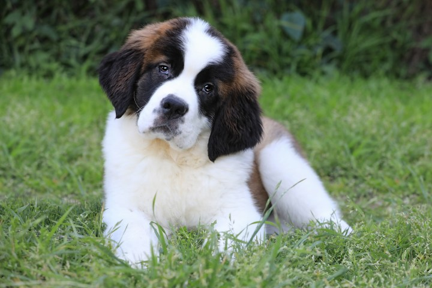

𝘋𝘰𝘨𝘴 𝘢𝘯𝘥 𝘗𝘢𝘸𝘴
𝘋𝘰𝘨𝘴 𝘢𝘯𝘥 𝘥𝘖𝘎𝘚 𝘢𝘯𝘥 𝘋𝘰𝘎𝘴 𝘢𝘯𝘥 𝘥𝘖𝘨𝘚
Pomeranians
Facts about Pomeranian Dogs
- Pomeranians have some of the most amazing, soft coats in the history of dogs.
- they are intelligent, highly social, and downright fluffy and adorable.
- Pomeranian puppies are beyond adorable. But there’s more to these adorable pooches than their irresistible looks. It’s fairly obvious as to why the Pomeranian is such a popular pup:
Golden Retriever
Facts about Golden Retriever Dogs
- A Golden Retriever puppy’s front legs may even look shorter than their hind legs from age 5 months to 1 year,
- Golden Retrievers are somehow both majestic and completely silly; they’re simultaneously big ol’ goofballs and compassionate listeners.
- Golden Retrievers are notoriously loyal and obedient. They form very strong bonds with their human “pack.â€
Saint Bernard
Facts about Saint Bernard Dogs
- Anyone who’s ever seen a fully-grown Saint Bernard can attest to their impressive size.
- Saint Bernards were actually named after a snow-covered pass they used to guard. Situated in the Alps, between Italy and Switzerland, the Great St. Bernard Pass poses a significant risk to those attempting to traverse its icy stretches.
- This breed is famous for their significant work as search and rescue dogs in the Swiss Alps.
Akita

- Despite their small size as puppies, they grow into large and muscular dogs who require diligent training from an early age.
- Akita puppies are originated from Japan
- With their plump bodies, fluffy coats, and endearing facial expressions, these little canines have all it takes to become the perfect family companions.
Dogue de Bordeaux
- Originated from France (Bordeaux region)
- Large and powerful, typically weighing around 99-110 pounds (45-50 kg) for females and 110-145 pounds (50-66 kg) for males.
- Dogue de Bordeaux, also known as Bordeaux Mastiffs, are loyal, protective, and affectionate with their families. They are calm and gentle, but reserved around strangers.